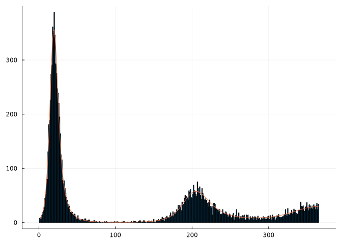

![]()
using DifferentialEquations
using DiffEqSensitivity
using Random
using Distributions
using Turing
using DataFrames
using StatsPlotsExploring Julia and ODEs
This post is exploring the use of Julia, Turing, and ODEs and largely expands on the work from Simon Frost’s awesome epirecipes.
Getting Started with Julia
Julia as a statistical programming language/environment has some really neat properties.
Speed, generally speed.
Turing also has some neat elements when it comes to probabilistic computing/programming. The key feature that interests me is the ability to switch between sampling approaches (e.g., Gibbs, Hamiltonian Monte Carlo, no u-turn sampling, sequential) while keeping the same syntax and model structure. While I absolutely love Stan and have spent many hours learning and the syntax (and it is actively developed, highly optimized, etc), I sometimes wish I could explore other sampling approaches due to strange posteriors (especially when it comes to times when SMC might be better).
The Approach
This is a pretty vanilla post, in which we will first create some fake data from a known distribution and then fit said data. As always, we will bring in the required packages.
Now we can generate a simple three compartment model, with S (susceptibles), I, (infected), and R (recovered).
Additionally:
- On average 10 contacts are made per day
- The contact rate is 0.05 (probability of passing infection to any given contact)
- Those who are infected recover on average every 5 days
- Immunity lasts for a 180 days on average before people become susceptible again
- Population size of 6,000 individuals
- Standard mass-action approach
Something that looks like the following:
using Luxor
using MathTeXEngineDrawing(200, 200, "sirs.png")
origin()
setline(10)
Luxor.arrow(Point(-40,0),Point(0,0))
Luxor.arrow(Point(-0,0),Point(40,0))
fontsize(15)
Luxor.text(L"S",Point(-40,20), halign = :center)
Luxor.text(L"I",Point(0,20), halign = :center)
Luxor.text(L"R",Point(40,20), halign = :center)
fontsize(12)
Luxor.text(L"β*c",Point(-20,10), halign = :center)
Luxor.text(L"γ",Point(20,10), halign = :center)
Luxor.text(L"δ",Point(0,-15), halign = :center)
loopx = 30
loopy = 40
adjx = 6
adjy = -2
Luxor.arrow(
Point(40,0) + Point(-adjx,adjy),
Point(40,0) + Point(-loopx,-loopy),
Point(-40,0)+ Point(loopx,-loopy),
Point(-40,0)+Point(adjx,adjy)
)
finish()function sir_ode!(du,u,p,t)
(S,I,R,C) = u
(β,c,γ, δ) = p
N = S+I+R
infection = β*c*I*S/N
recovery = γ*I
wane = δ * R
@inbounds begin
du[1] = -infection + wane
du[2] = infection - recovery
du[3] = recovery - wane
du[4] = infection
end
nothing
end;
tmax = 365.0
tspan = (0.0,tmax)
obstimes = 1.0:1.0:tmax
u0 = [5990.0,10.0,0.0,0.0] # S,I.R,C
p = [0.05,10.0,0.20, 1.0/180]; # β, c, γ, δ
prob_ode = ODEProblem(sir_ode!,u0,tspan,p);
sol_ode = solve(prob_ode,
Tsit5(),
saveat = 1.0);We can then visualize our expected cases:
C = Array(sol_ode)[4,:] # Cumulative cases
X = C[2:end] - C[1:(end-1)];
Random.seed!(1234)
Y = rand.(Poisson.(X));
bar(obstimes,Y,legend=false)
plot!(obstimes,X,legend=false)
Note the second wave of cases occuring as immunity begins to wane.
Solve Using Turing
Now we build our model in Turing, using our prior defined ODE. Note that I included a check on the ODE output to try and catch values less than one, otherwise the sampler would reject the solution (because Poisson distributions cannot have a rate parameters less than 0).
@model bayes_sir(y) = begin
# Calculate number of timepoints
l = length(y)
i₀ ~ Uniform(0.0,.2)
β ~ Uniform(0, .1)
immunity ~ Uniform(90,365)
I = i₀*6000.0
u0=[6000.0-I,I,0.0,0.0]
p=[β,10.0,0.2, 1.0/immunity]
tspan = (0.0,float(l))
prob = ODEProblem(sir_ode!,
u0,
tspan,
p)
sol = solve(prob,
Tsit5(),
saveat = 1.0)
sol_C = Array(sol)[4,:] # Cumulative cases
sol_X = sol_C[2:end] - sol_C[1:(end-1)]
l = length(y)
for i in 1:l
y[i] ~ Poisson(ifelse(sol_X[i] <0 , 1e-6, sol_X[i] ))
end
end;
mod = bayes_sir(Y[1:200]);
ode_nuts = sample(mod, NUTS(0.65),10000);describe(ode_nuts)2-element Vector{ChainDataFrame}:
Summary Statistics (3 x 8)
Quantiles (3 x 6)Now let’s see if we were able to recover our parameters:
plot(ode_nuts)
posterior = DataFrame(ode_nuts);
beta_hat = mean(posterior[!,:β])
immunity_hat = mean(posterior[!, :immunity])
println("Estimate for β: ", beta_hat)
println("Estimate for immunity duration: ", immunity_hat)
println("Estimate for initial proportion infected: ", mean(posterior[!, :i₀]))Estimate for β: 0.04984659207646735
Estimate for immunity duration: 178.34561091700505
Estimate for initial proportion infected: 0.0016216537054861632Not too bad! Now we can simulate the dynamics going forward:
function predict(y,chain)
# Length of data
l = length(y)
# Length of chain
m = length(chain)
# Choose random
idx = sample(1:m)
i₀ = chain[:i₀][idx]
β = chain[:β][idx]
immunity = chain[:immunity][idx]
I = i₀*6000.0
u0=[6000.0-I,I,0.0,0.0]
p=[β,10.0,0.2, 1.0/immunity]
tspan = (0.0,float(l))
prob = ODEProblem(sir_ode!,
u0,
tspan,
p)
sol = solve(prob,
Tsit5(),
saveat = 1.0)
out = Array(sol)
sol_X = [0.0; out[4,2:end] - out[4,1:(end-1)]]
hcat(sol_ode.t,out',sol_X)
end;
Xp = []
for i in 1:365
pred = predict(Y,ode_nuts)
push!(Xp,pred[2:end,6])
end
scatter(obstimes,Y,legend=false, ylims = [0,600])
plot!(obstimes,Xp,legend=false, color = "grey50", alpha = .2)
Conclusions
This shows a very intuitive approach towards compartmental modeling in a Bayesian framework using Julia.
Reuse
Citation
BibTeX citation:
@online{dewitt2022,
author = {Michael DeWitt},
editor = {},
title = {Turing and {ODEs}},
date = {2022-08-13},
url = {https://michaeldewittjr.com/programming/2022-08-13-turing-and-odes},
langid = {en}
}
For attribution, please cite this work as:
Michael DeWitt. 2022. “Turing and ODEs.” August 13, 2022.
https://michaeldewittjr.com/programming/2022-08-13-turing-and-odes.